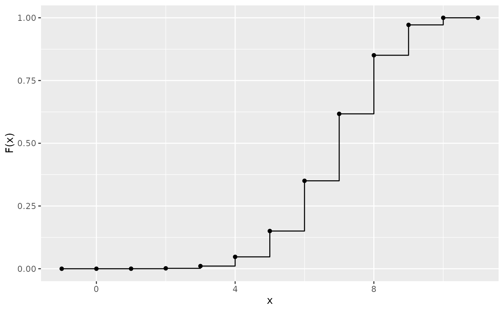
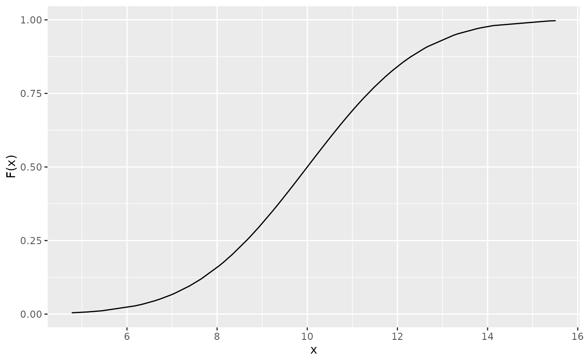

This function plots the cumulative distribution function (c.d.f) of a random variable
Arguments
- x
a numeric vector with the observed values of the random variable
- Fx
if NULL (default), then Fx is computed using one of the implemented distributions (see description of the dist argument below); otherwise the user must pass the values of Fx
- type
type of random variable; either discrete (default) or continuous; this argument is only necessary when Fx is passed by the user
- dist
optional; name of the distribution (currently the binomial, poisson and geometric distributions for discrete random variables, or uniform, exponential and normal distribution for continuous random variables)
- ...
further arguments passed to or from other methods
Examples
# \donttest{
# binomial:
x <- 0:10
cdf(x, dist = "binom", size = 10, prob = 0.7)

# normal:
x <- rnorm(100, mean = 10, sd = 2)
cdf(x, dist = "norm", mean = 10, sd = 2)

# }